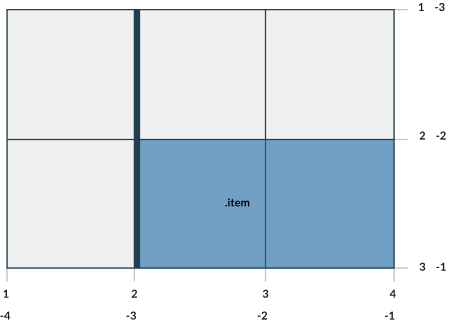
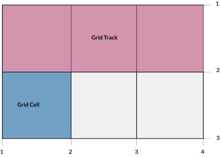
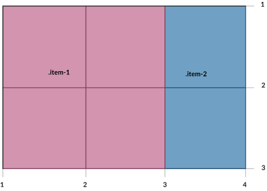
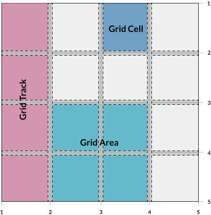

Defining a Grid
We set the display property of any element to grid, and that element becomes the grid
container and all it's children become grid items.
I want my grid to be 2 by 2. To set the rows I've used the
grid-template-rows property, and to specify how many columns should be
in the grid I've used grid-template-columns.
The size can be specified in any unit (e.g. pixels, percentages, viewport units, 1fr).
See the Pen Defining a Grid by Alexandra
Caulea (@alexandracaulea) on
CodePen.
Concepts and Terminology
- Grid Container (aka. parent container)
- Child Elements (aka. grid items)
- Grid Lines
- Grid Tracks
- Grid Cells
- Grid Areas
- Explicit Grid and Implicit Grid
Grid Lines
- Are the horizontal and vertical lines that form the basis of the grid structure.
- Are used to position items on the grid
- Refer to them by numerical index, starts at 1
-
Grid lines have negative indices, we can reference grid lines starting from the end of the grid
- We can name the grid lines so we don't have to count which grid line you need to reference

See the Pen
05. Grid lines - starter file by Alexandra Caulea (@alexandracaulea)
on CodePen.
👀 Sneak Peak at the layout below. Try resizing the window
See the Pen
06. Naming lines by Alexandra Caulea (@alexandracaulea)
on CodePen.
Grid Tracks and Grid Cells
- A grid track is the space between 2 adjacent grid lines.
-
We have the ability to separate grid-tracks with gutters, using
grid-row-gap and
grid-column-gap properties
-
The grid cell is the space between 2 adjacent row grid lines and 2 adjacent column grid lines. You can
think of it as a table cell.

Grid Areas
- A grid area is made up of 1 or more grid cells
- Is bound by 4 grid lines on each side of the grid area.
- To define a grid area use the
grid-template-areas property
-
A grid item can be assigned to a grid area using:
grid-areagrid-row, grid-row-start,
grid-row-endgrid-column, grid-column-start,
grid-column-end

👀 Sneak Peak: Grid Areas + CSS Variables + media queries = 😍
See the Pen
07. Grid Areas - starter file by Alexandra Caulea (@alexandracaulea)
on CodePen.
What about some gutters?
The gutters between grid tracks can be controlled with grid-row-gap,
grid-column-gap and grid-gap

See the Pen grid-gap by Alexandra Caulea
(@alexandracaulea) on
CodePen.
Properties defined on the Grid Container Recap
gridgrid-template-columnsgrid-template-rowsgrid-templategrid-template-areasgrid-gapgrid-column-gapgrid-row-gap
Some examples:
Explicit and Implicit Grid
The explicit grid is what we define using the CSS properties like grid-template-rows,
grid-template-columns and grid-template-areas
Q: But what happens if we place an item outside the grid?
-
A: The browser will create an
implicit grid
to hold that item.
-
We can specify the values of these implicit grid tracks by using
grid-auto-columns and
grid-auto-rows properties
- If these properties are not set, their default values is auto
- If they don't have any content, they will have a height of 0
See the Pen grid-auto-flow by Alexandra
Caulea (@alexandracaulea) on
CodePen.
Sizing a Grid Track
- Can be a CSS length, like 100px
- Can be a percentage, like 10%
- Can be a flexible length, declared using the
fr unit
min-contentmax-contentauto- A range defined my the
minmax()function
fit-content
See the Pen flexible-length by Alexandra
Caulea (@alexandracaulea) on
CodePen.
Keywords: auto-fill, auto-fit and dense
Keyword: auto-fill
- Fill the axis (row or column) with the most numbers of grid tracks without overflowing
- It creates grid tracks even though they may not be filled with cells.
See the Pen auto-fill by Alexandra Caulea
(@alexandracaulea) on
CodePen.
Keyword: auto-fit
- Behaves as
auto-fill
- Except it collapses all empty repeated tracks.
See the Pen auto-fit by Alexandra Caulea
(@alexandracaulea) on
CodePen.
Keyword: dense and the grid-auto-flow property
grid-auto-flow allows us to adjust how the automatic placement of grid items work when they
are not explicitly positioned with any grid-placement properties.
grid-auto-flow: [ row | column ] | dense
-
row: The auto-placement algorithm will place grid items by filling each row and add new
rows as needed.
-
column: The auto-placement algorithm will place grid items by filling each column and add new
columns as needed.
-
dense: The algorithm will attempt to fit smaller grid items that appear later in the source
order earlier in the grid.
- This will minimise the "holes" in the grid
-
If not specified, the browser will default to the "sparse" algorithm - the grid will be filled up in
order, never back-tracking. A big possibility of introducing "holes" in the grid.
See the Pen
CSS Grid - row, column, dense by Alexandra
Caulea (@alexandracaulea) on
CodePen.
Properties for the Children (Grid Items)
-
grid-column-start, grid-column-end , grid-row-start,
grid-row-end
-
grid-column, grid-row shorthand for
grid-column-start and grid-column-endgrid-row-start and grid-row-end
grid-areajustify-selfalign-selfplace-selfjustify-itemsalign-itemsplace-itemsjustify-contentalign-contentplace-content
grid-column-start, grid-column-end , grid-row-start,
grid-row-end
- Determines a grid item's location within the grid by referring to specific grid lines.
-
Values:
-
<line>number to refer to a numbered grid line, or a name to refer to a named
grid line
span <number>- the item will span across the provided number of grid tracks-
span <name>- the item will span across until it hits the next line with the
provided name
auto – indicates auto-placement, an automatic span, or a default span of one
See the Pen oNbrXEx by Alexandra Caulea (@alexandracaulea) on CodePen.
justify-self
align-self
place-self
place-self sets both the align-self and justify-self properties in a single declaration.
justify-items
Aligns grid items along the row axis. This value applies to all grid items inside the container.
align-items
Aligns grid items along the column axis. This value applies to all grid items inside the container.
place-items
place-items sets both the align-items and justify-items properties in a single declaration.
justify-content
This property aligns the grid along the row axis.
startendcenterstretchspace-aroundspace-betweenspace-evenly
align-content
This property aligns the grid along the column axis.
startendcenterstretchspace-aroundspace-betweenspace-evenly
place-content
place-content sets both the align-content and justify-content properties in a single declaration.
See the Pen
CSS Grid - example 8 by Alexandra Caulea (@alexandracaulea)
on CodePen.
Notes
-
float, display: inline-block, display: table-cell, vertical-align and column-* properties have no effect on
a grid item.
display: inline-grid- CSS Grid uncollapses the margins
@supportsubgrid
🤯 What about some examples?